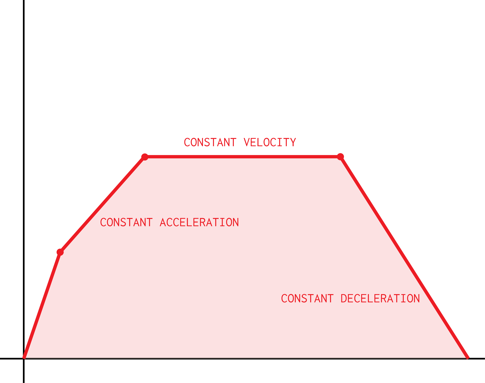

One way of describing velocity, in a three-dimensional world,
is a three-dimensional vector describing its direction and
magnitude. This is because the velocity of an object is
the
speed of that object in a certain direction.
One can plot a graph of the velocity of an object by plotting
its velocity in a given direction against the time. Usually,
it will look similar to this.

As annotated on the graph:
Whenever a line in a velocity-time graph is
perfectly
straight (unlikely in the real world), the object is either:
- Moving at a constant speed, or
- Accelerating or decelerating constantly